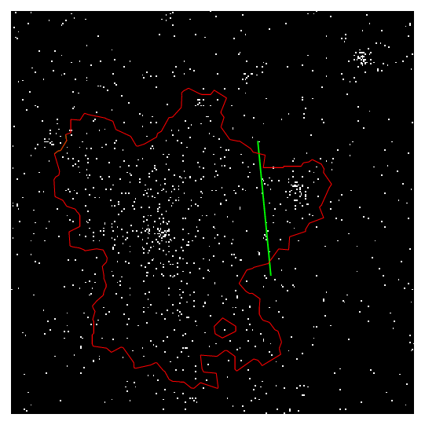
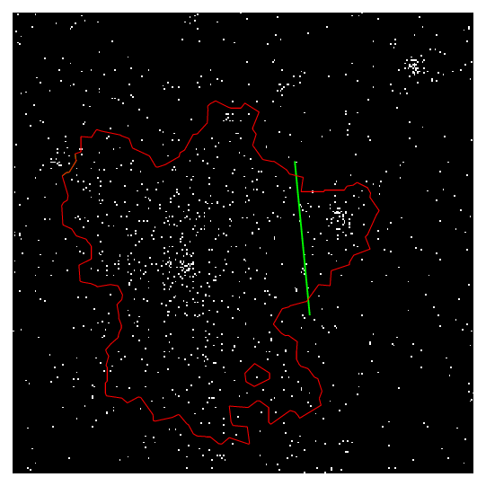
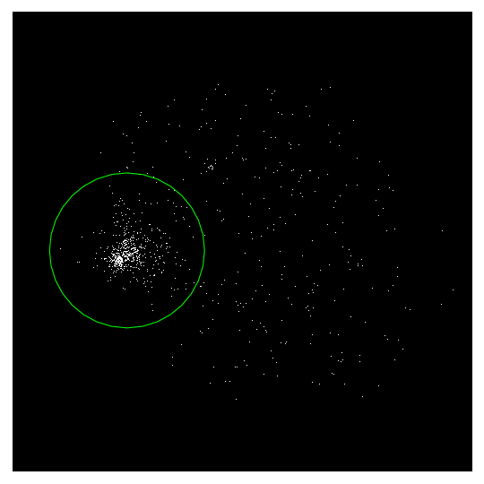
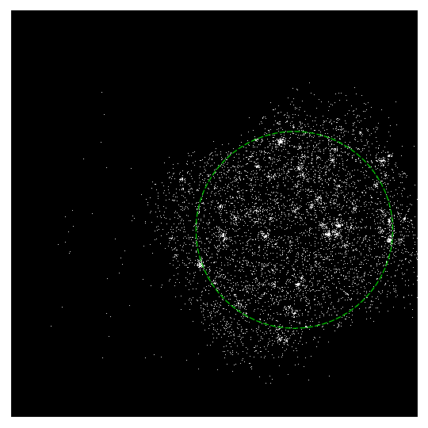

More than program |
Cut connections manually
 

There are some parameter which allow you to adjust the functioning in order to separate nearby, blended sources. However, the most direct way for a user who does not intend to study the algorithm details is to separate them manually. We provide a simple method to carve the source regions as you like. Open the image and load the source region file given by EXSdetect, draw a line across the source region, as shown in the two examples above. It's like cutting all the connections between nearby filled pixels crossed by this line with a knife. Save the line in a region file, and repeat EXSdetect with this file input using the option --CutLines. Then the source will be split into parts following the line your drew.
Background measurement
It is required by the default background measurement algorithm of EXSdetect that a fraction (the faint fraction) of the image is source-free, thus can be regarded as pure-background region. The background measurement relies on a sufficient number of filled pixels which contain no source signal. This is always fulfilled for typical X-ray iamges, except in the case that the whole field is dominated by source signals, such as very shallow fields with very bright sources, or extended sources covering the entire FOV. For such fields please set manually a background flux or provide a manually selected region for EXSdetect to calculate the average background flux, using the -b option.
Even if the field is not source dominated, you can still improve the background measurement by selecting the background sampleing region. The user specified background sampling region should follow these rules and imported into EXSdetect using the --BkgRegion option (not the -b option).
For example, in the case above, the circle enclosing the cluster is saved into a ds9 region file and loaded into EXSdetect with --BkgRegion. While runing EXSdetect again, the circle region is excluded so that the contamination from the wing of the cluster is reduced.
We assume the background is constant across the field. This is reasonable for images with small field-of-view (FOV), such as Swift -XRT images. However, it may not apply to images with strong background variations. ...